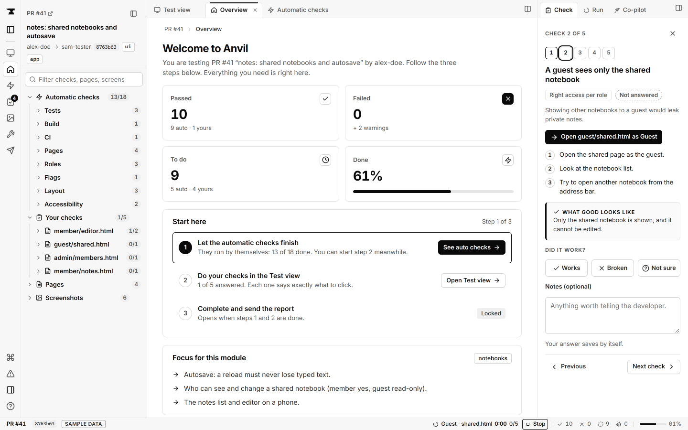
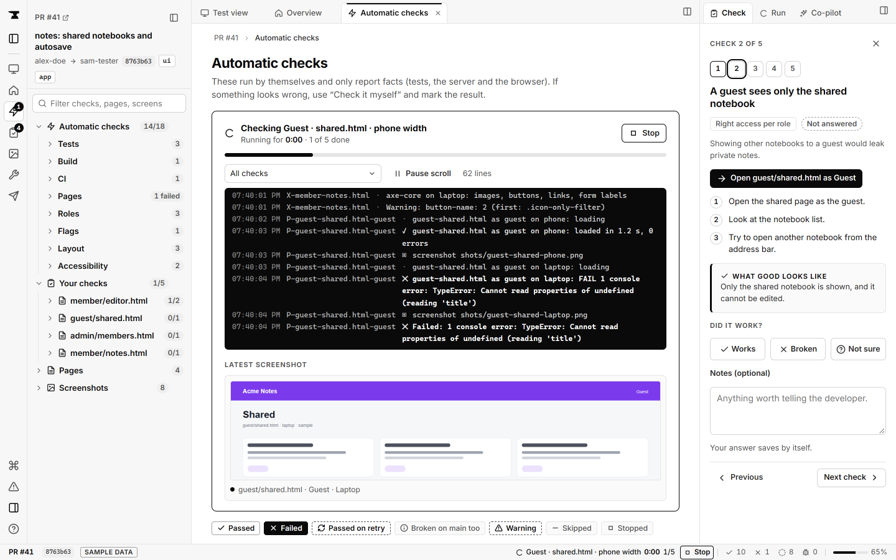

Local mode
DefaultEverything runs on your computer: the browser, the scan, the report. Nothing is uploaded.
- Your code never leaves your machine
- Uses the Chrome or Edge you already have
- Reports saved in
.anvil/runs/
Real checks with proof, guided human checks, and a fix list your AI can act on.
curl -fsSL https://anvil.horvans.com/install.sh | sh
macOS / Linux · Windows, Claude Code, Codex

The real Anvil dashboard, running on its sample data.
The evidence
These aren't edge cases. They're what researchers keep finding when they look.
45%
of coding tasks: the AI-generated code introduced a security flaw.
Veracode, 2025 (opens source)~5,000
of 380,000 vibe-coded apps scanned were leaking data.
RedAccess study, via Vibe Graveyard (opens source)48 days
Lovable left thousands of projects exposed for 48 days.
The Next Web (opens source)None of this took a genius attacker. It took nobody checking.
How it works
Anvil opens every page in a real browser, on a phone and a laptop. Every finding comes with a screenshot, a file and line, or the request that proved it.

Real run on Anvil's sample app: the laptop check fails with the console error that proves it.
Some things only a person can judge: does sign-up make sense, is the price right, does checkout feel safe. Anvil gives you short steps and three buttons. Attach a screenshot when something's off.
Try the buttons. In Anvil, your answers go straight into the report.
/signup on your phone.What good looks like
The note is still there after the refresh.
signup-refresh.png attachedNote vanished after refresh.
You get the report with its evidence, a plain fix list, and prompts ready to paste into Lovable, Cursor or Claude. Your AI fixes. Anvil scans again. Repeat until nothing fails.
Fix these 4 issues in acme-notes. Change nothing else, then run anvil_scan again.
Works with your setup
Add Anvil as an MCP server. Claude runs the scan, reads the report and proposes fixes you approve.
Same tools, same report. One command to connect.
Bring your own key for the write-ups. It's kept in your system keychain.
A few AI write-ups a month on us, with a hard cap. No card.
Every check still runs. The report and fix list use plain templates.
Local mode and GitHub mode
Everything runs on your computer: the browser, the scan, the report. Nothing is uploaded.
.anvil/runs/Connect a read-only GitHub App. We fetch a copy of the repo, scan it for leaked keys and open database rules, then delete the copy.
If removing them fails for any reason, the AI call doesn't happen. Your report still works.
Honest by design
A scan can prove a problem exists. It can't prove there are none. So every Anvil report says what was checked, when, and what wasn't.
Add-on marketplace
Packs are plain JSON: checks and human steps. No code runs. Open source and reviewed by pull request.
supabase-rlsrules-probeEvery table has row level security, and signed-out visitors can't read rows.
stripe-checkoutsecret-patternNo secret key in the browser, and the success page needs a real payment.
auth-pagespage · humanSign-up, sign-in and password reset work on a phone and refuse obvious mistakes.
Write the checks you wish existed for your stack. Send a pull request; once it passes review, everyone can add it with anvil addon add <id>.
{
"id": "supabase-rls",
"anvil": "^0.2",
"checks": [{
"kind": "rules-probe",
"severity": "high",
"title": "Tables readable signed out"
}],
"humanChecks": [{
"prompt": "Can a signed-out visitor see notes?",
"screenshot": true
}]
}Pricing
Nothing to buy today. Join the waitlist and we'll write when the paid plans open.
₹0no card needed
₹499/ month
₹2,999/ month
Prices in Indian rupees, before tax. Plans may change before launch.
Install
The installers pin version 0.2.0, check its SHA-256, then install. You need Node 20 or newer and Chrome or Edge.
In PowerShell:
irm https://anvil.horvans.com/install.ps1 | iexIn Terminal:
curl -fsSL https://anvil.horvans.com/install.sh | shInstall Anvil first (Windows or macOS / Linux tab), then connect it:
claude mcp add anvil -- anvil-mcpThen ask Claude: “Check my app at localhost:3000 with Anvil.”
Install Anvil first (Windows or macOS / Linux tab), then connect it:
codex mcp add anvil -- anvil-mcpThen ask Codex: “Check my app at localhost:3000 with Anvil.”
Quick try, nothing installed
npx -y https://anvil.horvans.com/dl/anvil-0.2.0.tgz scan http://localhost:3000Prefer to read first? The install guide explains each step, and the demo shows a real recorded run.